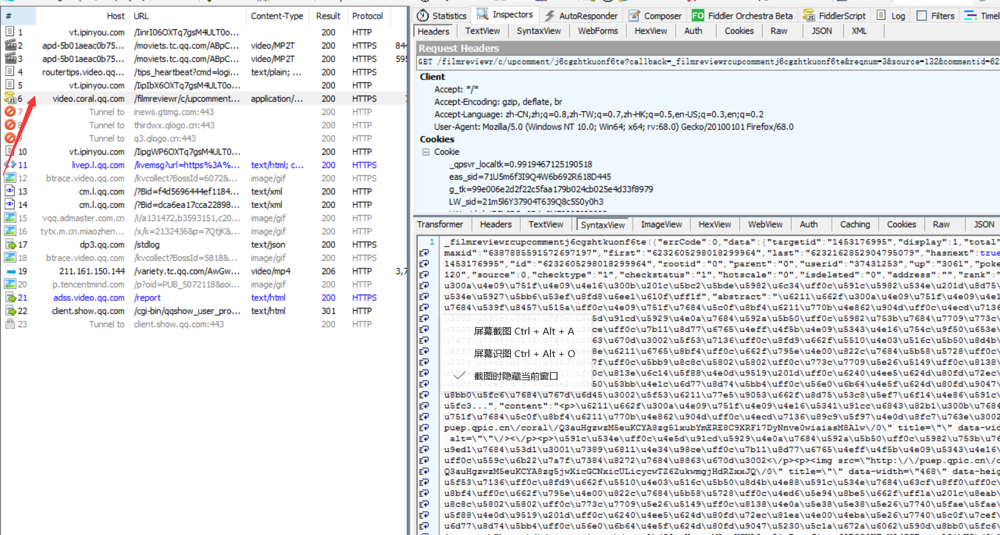

原文出处:本文由博客园博主swineherd_MCQ提供。
原文连接:https://www.cnblogs.com/mcq1999/p/11388210.html
原文连接:https://www.cnblogs.com/mcq1999/p/11388210.html
用户代理池
用户代理池就是将不同的用户代理组建成为一个池子，随后随机调用。
作用：每次访问代表使用的浏览器不一样
import urllib.request
import re
import random
uapools=[
'Mozilla/5.0 (Windows NT 10.0; Win64; x64; rv:68.0) Gecko/20100101 Firefox/68.0',
'Mozilla/5.0 (Windows NT 10.0; WOW64) AppleWebKit/537.36 (KHTML, like Gecko) Chrome/57.0.2987.98 Safari/537.36 LBBROWSER',
'Mozilla/5.0 (Windows NT 6.1; WOW64) AppleWebKit/535.1 (KHTML, like Gecko) Chrome/14.0.835.163 Safari/535.1',
'Mozilla/5.0 (Windows; U; Windows NT 6.1; ) AppleWebKit/534.12 (KHTML, like Gecko) Maxthon/3.0 Safari/534.12',
]
def ua(uapools):
thisua=random.choice(uapools)
print(thisua)
headers=("User-Agent",thisua)
opener=urllib.request.build_opener()
opener.addheaders=[headers]
urllib.request.install_opener(opener)
for i in range(10):
ua(uapools)
thisurl="https://www.qiushibaike.com/text/page/"+str(i+1)+"/";
data=urllib.request.urlopen(thisurl).read().decode("utf-8","ignore")
pat='<div class="content">.*?<span>(.*?)</span>.*?</div>'
res=re.compile(pat,re.S).findall(data)
for j in range(len(res)):
print(res[j])
print('---------------------')IP代理与IP代理池的构建的两种方案
搜索西刺、大象代理IP
尽量选国外的IP。
import urllib.request
ip="219.131.240.35"
proxy=urllib.request.ProxyHandler({"http":ip})
opener=urllib.request.build_opener(proxy,urllib.request.HTTPHandler)
urllib.request.install_opener(opener)
url="https://www.baidu.com/"
data=urllib.request.urlopen(url).read()
fp=open("ip_baidu.html","wb")
fp.write(data)
fp.close()IP代理池构建的第一种方式（适合代理IP稳定的情况）
import random
import urllib.request
ippools=[
"163.125.70.22",
"111.231.90.122",
"121.69.37.6",
]
def ip(ippools):
thisip=random.choice(ippools)
print(thisip)
proxy=urllib.request.ProxyHandler({"http":thisip})
opener=urllib.request.build_opener(proxy,urllib.request.HTTPHandler)
urllib.request.install_opener(opener)
for i in range(5):
try:
ip(ippools)
url="https://www.baidu.com/"
data=urllib.request.urlopen(url).read().decode("utf-8","ignore")
print(len(data))
fp=open("ip_res/ip_baidu_"+str(i+1)+".html","w")
fp.write(data)
fp.close()
except Exception as err:
print(err)IP代理池构建的第二种方式（接口调用法，更适合代理IP不稳定的情况）
此方法因为经济原因暂时鸽着。
淘宝商品图片爬虫
现在的淘宝反爬虫，下面这份代码已经爬不了了，但可以作为练习。
import urllib.request
import re
import random
keyname="python"
key=urllib.request.quote(keyname) #网址不能有中文，这里处理中文
uapools=[
'Mozilla/5.0 (Windows NT 10.0; Win64; x64; rv:68.0) Gecko/20100101 Firefox/68.0',
'Mozilla/5.0 (Windows NT 10.0; WOW64) AppleWebKit/537.36 (KHTML, like Gecko) Chrome/57.0.2987.98 Safari/537.36 LBBROWSER',
'Mozilla/5.0 (Windows NT 6.1; WOW64) AppleWebKit/535.1 (KHTML, like Gecko) Chrome/14.0.835.163 Safari/535.1',
'Mozilla/5.0 (Windows; U; Windows NT 6.1; ) AppleWebKit/534.12 (KHTML, like Gecko) Maxthon/3.0 Safari/534.12',
]
def ua(uapools):
thisua=random.choice(uapools)
print(thisua)
headers=("User-Agent",thisua)
opener=urllib.request.build_opener()
opener.addheaders=[headers]
urllib.request.install_opener(opener)
for i in range(1,11): #第1页到第10页
ua(uapools)
url="https://s.taobao.com/search?q="+key+"&s="+str((i-1)*44)
data=urllib.request.urlopen(url).read().decode("UTF-8","ignore")
pat='pic_url":"//(.*?)"'
imglist=re.compile(pat).findall(data)
print(len(imglist))
for j in range(len(imglist)):
thisimg=imglist[j]
thisimgurl="https://"+thisimg
localfile="淘宝图片/"+str(i)+str(j)+".jpg"
urllib.request.urlretrieve(thisimgurl,localfile)同时使用用户代理池和IP代理池
封装成函数：
import urllib.request
import re
import random
uapools=[
'Mozilla/5.0 (Windows NT 10.0; Win64; x64; rv:68.0) Gecko/20100101 Firefox/68.0',
'Mozilla/5.0 (Windows NT 10.0; WOW64) AppleWebKit/537.36 (KHTML, like Gecko) Chrome/57.0.2987.98 Safari/537.36 LBBROWSER',
'Mozilla/5.0 (Windows NT 6.1; WOW64) AppleWebKit/535.1 (KHTML, like Gecko) Chrome/14.0.835.163 Safari/535.1',
'Mozilla/5.0 (Windows; U; Windows NT 6.1; ) AppleWebKit/534.12 (KHTML, like Gecko) Maxthon/3.0 Safari/534.12',
]
ippools=[
"163.125.70.22",
"111.231.90.122",
"121.69.37.6",
]
def ua_ip(myurl):
def ip(ippools,uapools):
thisip=random.choice(ippools)
print(thisip)
thisua = random.choice(uapools)
print(thisua)
headers = ("User-Agent", thisua)
proxy=urllib.request.ProxyHandler({"http":thisip})
opener=urllib.request.build_opener(proxy,urllib.request.HTTPHandler)
opener.addheaders = [headers]
urllib.request.install_opener(opener)
for i in range(5):
try:
ip(ippools,uapools)
url=myurl
data=urllib.request.urlopen(url).read().decode("utf-8","ignore")
print(len(data))
break
except Exception as err:
print(err)
return data
data=ua_ip("https://www.baidu.com/")
fp=open("uaip.html","w",encoding="utf-8")
fp.write(data)
fp.close()封装成模块：
把模块拷贝到python目录
使用：
from uaip import *
data=ua_ip("https://www.baidu.com/")
fp=open("baidu.html","w",encoding="utf-8")
fp.write(data)
fp.close()抓包分析
fiddler工具：用作代理服务器，request和response都要经过fiddler
选用火狐浏览器，设置网络：
设置HTTPS协议：打开fiddler的工具的选项，打上勾
然后点Actions选导入到桌面。
再回到火狐的设置
导入桌面上的证书
常用命令clear：清屏
自动进行Ajax异步请求数据
如微博，拖到下面的时候数据才加载出来，不是同步出来的。再如“点击加载更多”，都是异步，需要抓包分析。
看下面这个栗子。
腾讯视频评论（深度解读）爬虫实战
在火狐浏览器打开腾讯视频，比如https://v.qq.com/x/cover/j6cgzhtkuonf6te.html
点击查看更多解读，这时fiddler会有一个js文件：

里面的内容就是评论。
找到一条评论转一下码：
在火狐里ctrl+f看看有没有这条评论。
copy js文件的url。
点击查看更多评论，再触发一个json，copy url
分析两个url：
通过分析，我们可以知道j6cg……是视频id，reqnum是每次查看的评论数量，commentid是评论id
https://video.coral.qq.com/filmreviewr/c/upcomment/【vid】?reqnum=【num】&commentid=【cid】
- 单页评论爬虫
有一些特殊字符比如图片现在还不知道怎么处理……以后再说吧
import urllib.request
import re
from uaip import *
vid="j6cgzhtkuonf6te"
cid="6227734628246412645"
num="3" #每页提取3个
url="https://video.coral.qq.com/filmreviewr/c/upcomment/"+vid+"?reqnum="+num+"&commentid="+cid
data=ua_ip(url)
titlepat='"title":"(.*?)","abstract":"'
commentpat='"content":"(.*?)",'
titleall=re.compile(titlepat,re.S).findall(data)
commentall=re.compile(commentpat,re.S).findall(data)
# print(len(commentall))
for i in range(len(titleall)):
try:
print("评论标题是："+eval("u'"+titleall[i]+"'"))
print("评论内容是："+eval("u'"+commentall[i]+"'"))
print('---------------')
except Exception as err:
print(err)翻页评论爬虫
查看网页源代码可以发现last:后面的内容为下一页的idimport urllib.request import re from uaip import * vid="j6cgzhtkuonf6te" cid="6227734628246412645" num="3" for j in range(10): #爬取1~10页内容 print("第"+str(j+1)+"页") url = "https://video.coral.qq.com/filmreviewr/c/upcomment/" + vid + "?reqnum=" + num + "&commentid=" + cid data = ua_ip(url) titlepat = '"title":"(.*?)","abstract":"' commentpat = '"content":"(.*?)",' titleall = re.compile(titlepat, re.S).findall(data) commentall = re.compile(commentpat, re.S).findall(data) lastpat='"last":"(.*?)"' cid=re.compile(lastpat,re.S).findall(data)[0] for i in range(len(titleall)): try: print("评论标题是：" + eval("u'" + titleall[i] + "'")) print("评论内容是：" + eval("u'" + commentall[i] + "'")) print('---------------') except Exception as err: print(err)
对于短评（普通评论）方法类似，这里就不赘述了，看下面这个短评爬虫代码：
import urllib.request
import re
from uaip import *
vid="1743283224"
cid="6442954225602101929"
num="5"
for j in range(10): #爬取1~10页内容
print("第"+str(j+1)+"页")
url="https://video.coral.qq.com/varticle/"+vid+"/comment/v2?orinum="+num+"&oriorder=o&pageflag=1&cursor="+cid
data = ua_ip(url)
commentpat = '"content":"(.*?)"'
commentall = re.compile(commentpat, re.S).findall(data)
lastpat='"last":"(.*?)"'
cid=re.compile(lastpat,re.S).findall(data)[0]
# print(len(gg))
# print(len(commentall))
for i in range(len(commentall)):
try:
print("评论内容是：" + eval("u'" + commentall[i] + "'"))
print('---------------')
except Exception as err:
print(err)